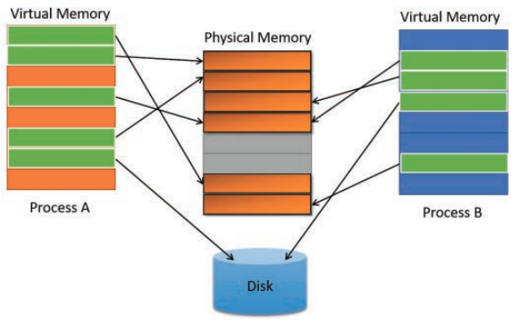
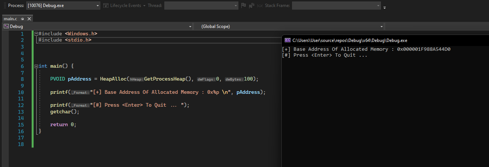
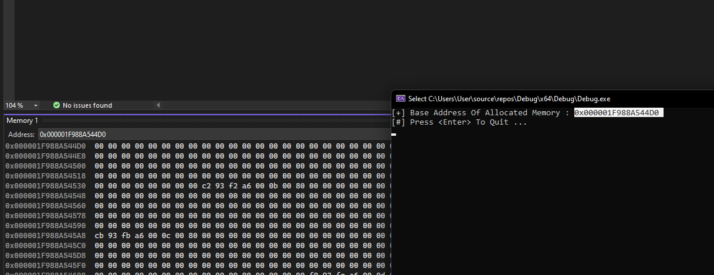
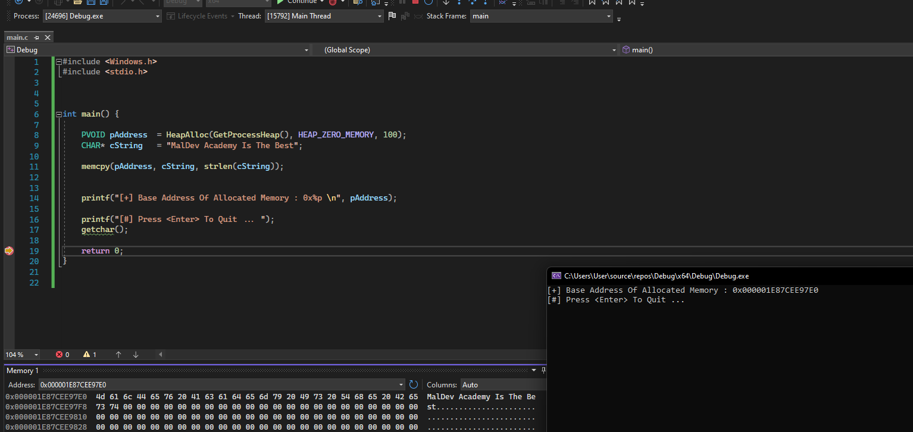
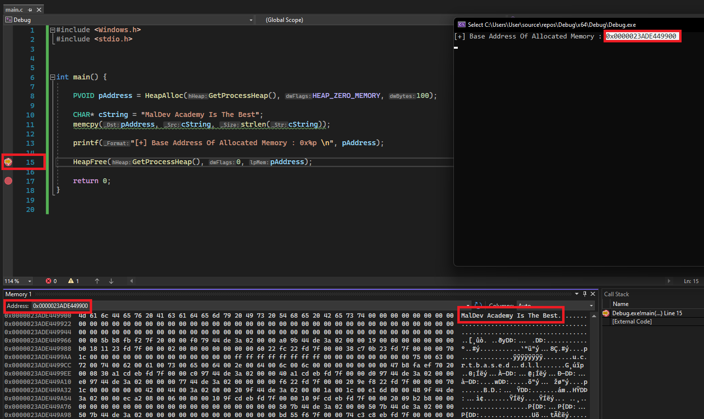
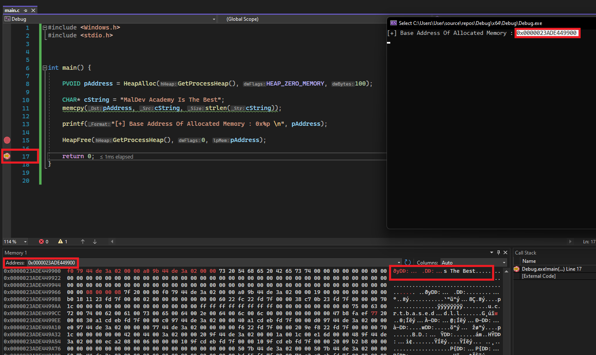

Introduction
This module goes through the fundamentals of Windows memory. Understanding how Windows handles memory is crucial to building advanced malware.
Virtual Memory & Paging
Memory in modern operating systems is not mapped directly to physical memory (i.e the RAM). Instead, virtual memory addresses are used by processes that are mapped to physical memory addresses. There are several reasons for this but ultimately the goal is to save as much physical memory as possible. Virtual memory may be mapped to physical memory but can also be stored on disk. With virtual memory addressing it becomes possible for multiple processes to share the same physical address while having a unique virtual memory address. Virtual memory relies on the concept of Memory paging which divides memory into chunks of 4kb called "pages".
See the image below from the Windows Internals 7th edition - part 1 book.

Page State
The pages residing within a process's virtual address space can be in one of 3 states:
Page Protection Options
Once the pages are committed, they need to have their protection option set. The list of memory protection constants can be found here but some examples are listed below.
PAGE_NOACCESS - Disables all access to the committed region of pages. An attempt to read from, write to or execute the committed region will result in an access violation.PAGE_EXECUTE_READWRITE - Enables Read, Write and Execute. This is highly discouraged from being used and is generally an IoC because it's uncommon for memory to be both writable and executable at the same time.PAGE_READONLY - Enables read-only access to the committed region of pages. An attempt to write to the committed region results in an access violation.Memory Protection
Modern operating systems generally have built-in memory protections to thwart exploits and attacks. These are also important to keep in mind as they will likely be encountered when building or debugging the malware.
x86 vs x64 Memory Space
When working with Windows processes, it's important to note whether the process is x86 or x64. x86 processes have a smaller memory space of 4GB (0xFFFFFFFF) whereas x64 has a vastly larger memory space of 128TB (0xFFFFFFFFFFFFFFFF).
Allocating Memory Example
This example goes through small code snippets to better understand how one can interact with Windows memory via C functions and Windows APIs. The first step in interacting with memory is allocating memory. The snippet below demonstrates several ways to allocate memory which is essentially reserving a memory inside the running process.
// Allocating a memory buffer of *100* bytes
// Method 1 - Using malloc()
PVOID pAddress = malloc(100);
// Method 2 - Using HeapAlloc()
PVOID pAddress = HeapAlloc(GetProcessHeap(), 0, 100);
// Method 3 - Using LocalAlloc()
PVOID pAddress = LocalAlloc(LPTR, 100);Memory allocation functions return the base address which is simply a pointer to the beginning of the memory block that was allocated. Using the snippets above, pAddress will be the base address of the memory block that was allocated. Using this pointer several actions can be taken such as reading, writing, and executing. The type of actions that can be performed will depend on the protection assigned to the allocated memory region.
The image below shows what pAddress looks like under the debugger.

When memory is allocated, it may either be empty or contain random data. Some memory allocation functions provide an option to zero out the memory region during the allocation process.

Writing To Memory Example
The next step after memory allocation is generally writing to that buffer. Several options can be used to write to memory but for this example, memcpy is used.
PVOID pAddress = HeapAlloc(GetProcessHeap(), HEAP_ZERO_MEMORY, 100);
CHAR* cString = "Offensive Engineering Handbook Is The Best";
memcpy(pAddress, cString, strlen(cString));HeapAlloc uses the HEAP_ZERO_MEMORY flag which causes the allocated memory to be initialized to zero. The string is then copied to the allocated memory using memcpy. The last parameter in memcpy is the number of bytes to be copied. Next, recheck the buffer to verify that the data was successfully written.

Freeing Allocated Memory
When the application is done using an allocated buffer, it is highly recommended to deallocate or free the buffer to avoid memory leaks.
Depending on what function was used to allocate memory, it will have a corresponding memory deallocation function. For example:
malloc requires the use of the free function.HeapAlloc requires the use of the HeapFree function.LocalAlloc requires the use of the LocalFree function.The images below show HeapFree in action, freeing allocated memory at address 0000023ADE449900. Notice the address 0000023ADE449900 still exists within the process but its original content was overwritten with random data. This new data is most likely due to a new allocation performed by the OS inside the process.

